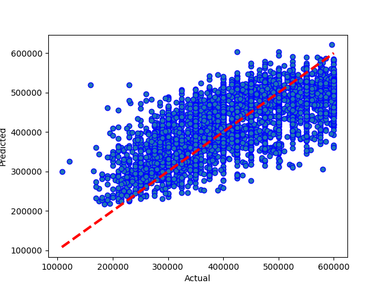

Results from Neural Network m02 two layers
Dataset Version: 09
Date run: 2022-12-12 11:11:02.111961
Start time: 2022-12-12 11:02:29.069544
End time: 2022-12-12 11:11:02.111950
Results
Summary
not updated saved model, the previous run was better
0.4991689699620965 is worse than or equal to 0.540824203913349
Best Model: Comparing model predictions to actual property values

Model Specific Notes
can't display hyperparameter comparison for neural network
can't display model performance graphs for neural network
can't display model performance graphs for neural network
Neural Network Loss - Head
|
loss |
val_loss |
epoch |
| 0 |
5.002693e+10 |
1.051029e+10 |
0 |
| 1 |
1.008145e+10 |
9.706399e+09 |
1 |
| 2 |
9.316134e+09 |
8.964575e+09 |
2 |
| 3 |
8.687716e+09 |
8.411072e+09 |
3 |
| 4 |
8.260261e+09 |
8.042077e+09 |
4 |